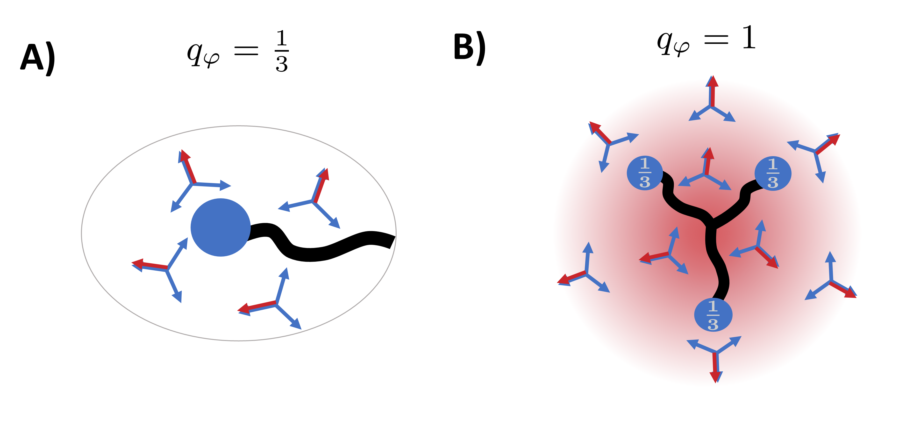

Fractional vortices and confinement

Astonishing physics sometimes reveals itself in the most unlikely places. The melting of 54COOBC,a molecular liquid crystal film of a single layer, exhibits a phase with a hidden order parameter. In order to explain the unexpected specific heat signal and the peculiar sequence of phase transitions, I studied the finite temperature phase diagram of a system of coupled classical vectors. Our results, obtained using a specially devised Monte-Carlo algorithm and analytical arguments, show the existence of a new phase which was not previously found (our open code can be found here). The nematic-hexatic model that we studied encompasses the competition of nematic molecular order ($\varphi$) and hexatic bond-orientational order ($\vartheta$). Shown below is a rescaled verison of this model:
The challenge in this model is the presence of two global symmetries: a global $\text{O(2)}$ rotational symmetry as both nematic and hexatic rotate in unison and a relative $\mathbb{Z}_3$ discrete symmetry due to the coupling $\lambda \cos{[3(\vartheta - \varphi)]}$, where $\sigma = \vartheta - \varphi \rightarrow \sigma + \frac{2\pi}{3} n$ with $n = -1, 0, 1$. The interplay between these two symmetries is the emergence of a Potts phase transition, which we believe describes the hidden order phase observed in 54COOBC. In our simulations, this phase (see figure above for the resulting finite temperature phase diagram, with $\Delta \sim J_2/J_6$) develops in a very narrow temperature range, which was missed in previous work.
The hidden order $\mathbb{Z}_3$ phase involves a coexistence of free vortices of charge $\pm1$ with long-range discrete Potts order. The charge $\pm1$ vortices are bound states of three fractional vortices of charge $1/3$ (see figure on the right for a schematic of the fractional [A] and composite vortices [B]), and resemble baryons formed from a bound state of three confined quarks. In the coupled XY model, each " quark " is bound by a " string " formed from a Potts domain wall. Thus, the solution to this long-standing mystery phase in the liquid crystals is a classical analog of quark confinement.
This paper is now published at Physical Review X. You can see it here, in open access. I am now exploring whether dual representations of this model can provide further insight into the order parameter of this relative order phase, as well as a renormalization group study of the composite vortices.
Hund's Coupling and Unconventional Superconductivity
The iron-based superconductors, discovered in 2008, are a family of high-temperature superconductors with properties that are irreconcilable with BCS theory. Although a clear gap $\Delta_c$ opens, the nature of their electron pairing is still unknown, despite being the subject of tremendous amounts of research. This is a remarkably diverse family, with some presenting magnetic order, all with radically different Fermi surfaces (the electrons' momentum spectrum), and with $T_c$ itself varying substantially. Yet, it was shown that the ratio of their maximal gap to critical temperature is fixed: $\Delta_{c,\rm max}/T_c \simeq 7.2$. This universal relation suggests a common underlying mechanism. Moreover, the wide variation of the Fermi surface morphology across the family of iron-based superconductors leads us to consider a local rather than momentum-based origin for the electron pairing.
The iron-based superconductors are multiorbital systems, in which each iron atom is contained within a tetrahedral environment, with an average occupation of $2$ electrons in the $t_{\rm 2g}$ orbitals. The Hund's coupling $J_H$ tends to align the spins in the different orbitals, and this is an important driver of strong electron correlations. The Hund's coupling $J_H$ suppresses the intersite hopping of electrons that are oriented oppositely to the local magnetization.
I have developed a many-body treatment of the Hund-Kondo model, in which the iron atom is viewed as an impurity in the metallic environment. Using a method that combined large-N Schwinger bosons with slave-fermions, this leads to a set of self-consistent integral equations for the self energies of the holons ($\chi$) and spinons ($b$) (see figure below) which describe the valence and spin fluctuations of the iron atom. The work has been benchmarked by comparing the predicted dynamics and thermodynamics with previous work on the Hund coupled iron atom. The phase diagram derived from this method is shown below in c. As the Hund coupling ($J_H$) is increased (moving from right to left), the spin-orbital separated phase opens up (in light red). This is associated with large spin fluctuation and gapped orbital fluctuations, and extends to extremely low temperatures.

The first publication stemming from this work was published in Physical Review B. You can find the pdf here.
A follow-up which includes valence fluctuations was released as a preprint on the arxiv on 03/11/2022, see here. Our past work was done in the limit of three electrons among three orbitals, which is unrealistic for the iron-based compounds. It was therefore needed to include mixed valence states. A careful study of large emergent moment shows that it disappears upon hole doping, and that that phase presents singular features due to nearly-frozen charge degrees of freedom. The phase diagram is presented below. Logarithmic corrections due to a slow approach to Kondo screening are responsible for this singular scaling. This unusual spin susceptibility could act to seedin local pairing in the iron-based superconductors.

I am now working to extend this work to include pairing diagrams for the spinons and the holons. This is inspired by the tRVB proposal by Coleman, Komijani, Konig. The interaction of spin-orbit coupling and Hund's coupling leads to easy-plane anisotropy in the Hund's ferromagnetic states, which leads to triplet spinon pairing. Including this into a DMFT-like approach is the subject of our current work.
Miscelaneous Projects: Spinels
I remain deeply interested in issues in frustrated magnetism. Through corridor conversations, I got to work with my Rutgers colleagues on some exciting experiments. Pr. Jak Chakhalian's group at Rutgers has synthesized ultrathin $\text{CoCr}_2\text{O}_4$ slices, which feature three triangular and one kagome planes. The absence of a spin ordering or freezing transition was observed down to 0.03 K, in the presence of strong antiferromagnetic correlations. Working with Postdoc Sobhit Singh, our calculations demonstrate the emergence of highly degenerate magnetic ground states at the 0 K limit, due to the competition among multiply altered exchange interactions. Our work was published in Nano Letters.